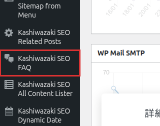

インストール・初期設定
Kashiwazaki SEO FAQ のインストールから初期設定までの手順を説明します。外部通信やCronジョブは使用しないため、シンプルにセットアップできます。
インストール手順
1
WordPress管理画面の「プラグイン」→「新規追加」→「プラグインのアップロード」からZIPファイルをアップロードします。または、wp-content/plugins/ ディレクトリにFTPで展開します。
2
「プラグイン」一覧画面で「Kashiwazaki SEO FAQ」を有効化します。
3
有効化後、管理画面の左メニューに「SEO FAQ」が追加されます。設定ページ（kashiwazaki-seo-faq）にアクセスしてデザインをカスタマイズできます。

ヒント
プラグインの有効化直後からFAQブロックが使用可能です。特別な初期設定は不要ですが、デザインのカスタマイズを行う場合は設定ページから調整してください。
設定ページ
管理画面の左メニュー「SEO FAQ」をクリックすると設定ページが表示されます。ここで質問・回答の表示スタイルをカスタマイズできます。
設定項目
| 設定項目 | 説明 |
|---|---|
| 質問アイコン | 質問の先頭に表示されるアイコン（Q など）を設定します |
| 回答アイコン | 回答の先頭に表示されるアイコン（A など）を設定します |
| アイコン色 | 質問・回答アイコンの色をカラーピッカーで指定します |
| フォントサイズ | 質問・回答テキストのフォントサイズを設定します |
補足
設定の保存にはnonce検証とmanage_options権限が必要です。管理者権限を持つユーザーのみ設定を変更できます。入力値はsanitize_text_fieldでサニタイズされます。
データ保存について
設定データはwp_optionsテーブルのkashiwazaki_seo_faq_optionsキーに保存されます。カスタムテーブルは作成しません。
| 項目 | 内容 |
|---|---|
| 保存先 | wp_options テーブル |
| オプションキー | kashiwazaki_seo_faq_options |
| カスタムテーブル | なし |
| 外部通信 | なし（AJAX、HTTP通信、メール送信は行いません） |